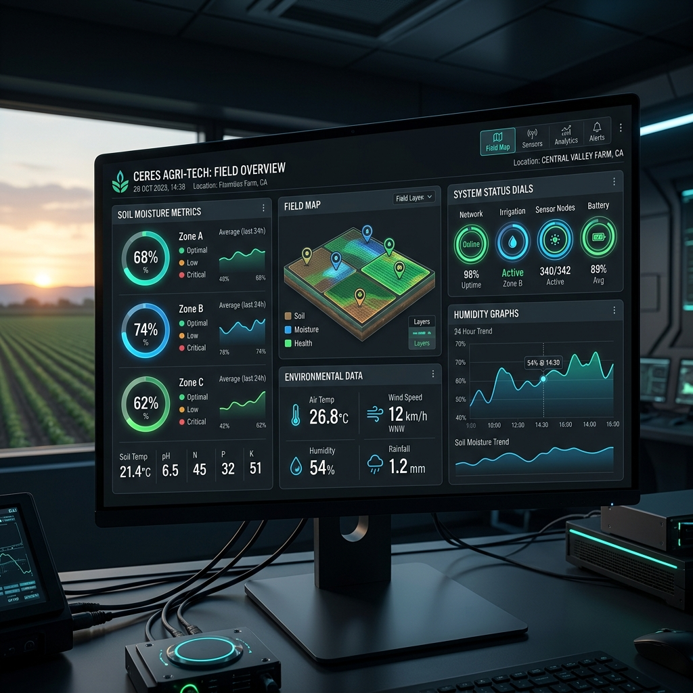
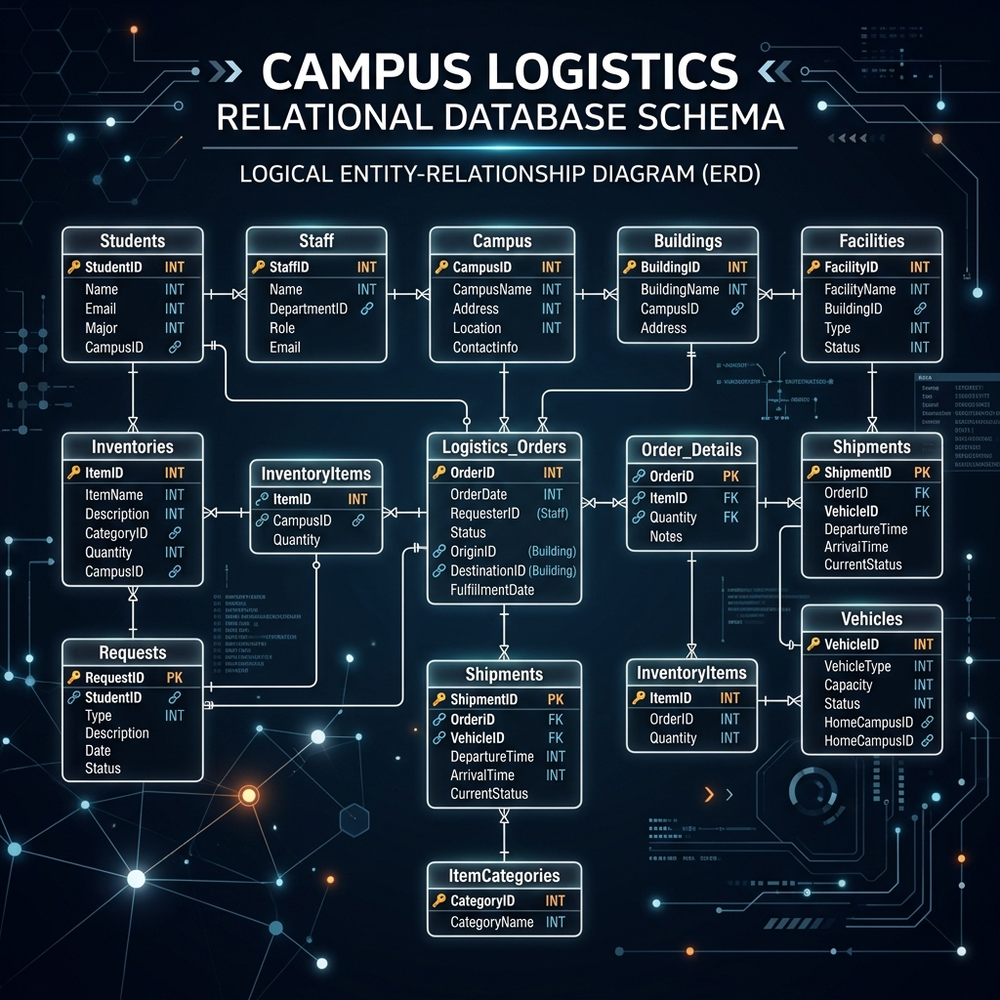

Data Science Projects
Machine learning models, statistical analyses, and interactive data visualizations.

Customer Churn Prediction
Built a classification pipeline to predict customer attrition using logistic regression and random forests. Achieved 89% accuracy with feature importance analysis and cross-validation.
Sales Forecasting Dashboard
Developed an interactive dashboard for quarterly sales trends using time series decomposition and ARIMA forecasting. Includes KPI cards, trend charts, and regional breakdowns.

Sentiment Analysis Pipeline
Designed an NLP workflow to classify product review sentiment using TF-IDF vectorization and Naive Bayes. Evaluated performance with precision-recall curves and confusion matrices.